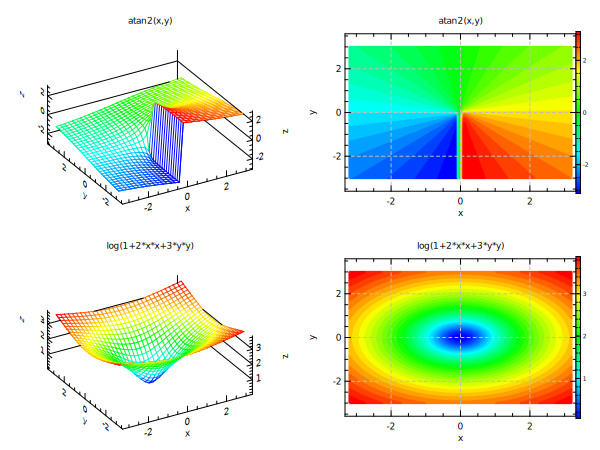

opt (ts:0.9 gd:1 al:50 az:30)
set x = range(32,-3.2,3.2)
set y = range(30,-3,3)
@ expr1 = "atan2(x,y)"
@ expr2 = "log(1+2*x*x+3*y*y)"
div 2 2
do n 1 2
mset z = [expr[n]]
mplot x y z (tl:"[expr[n]]" mt:mesh2)
mplot x y z (tl:"[expr[n]]" mt:cont2)
end
